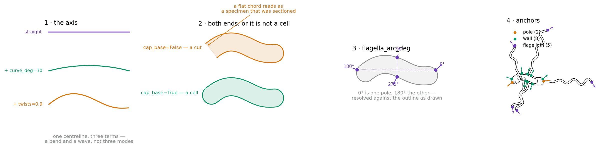
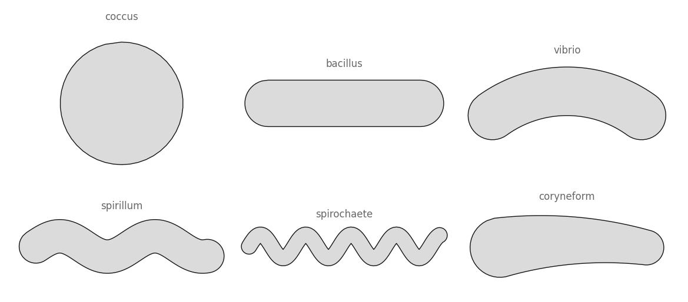
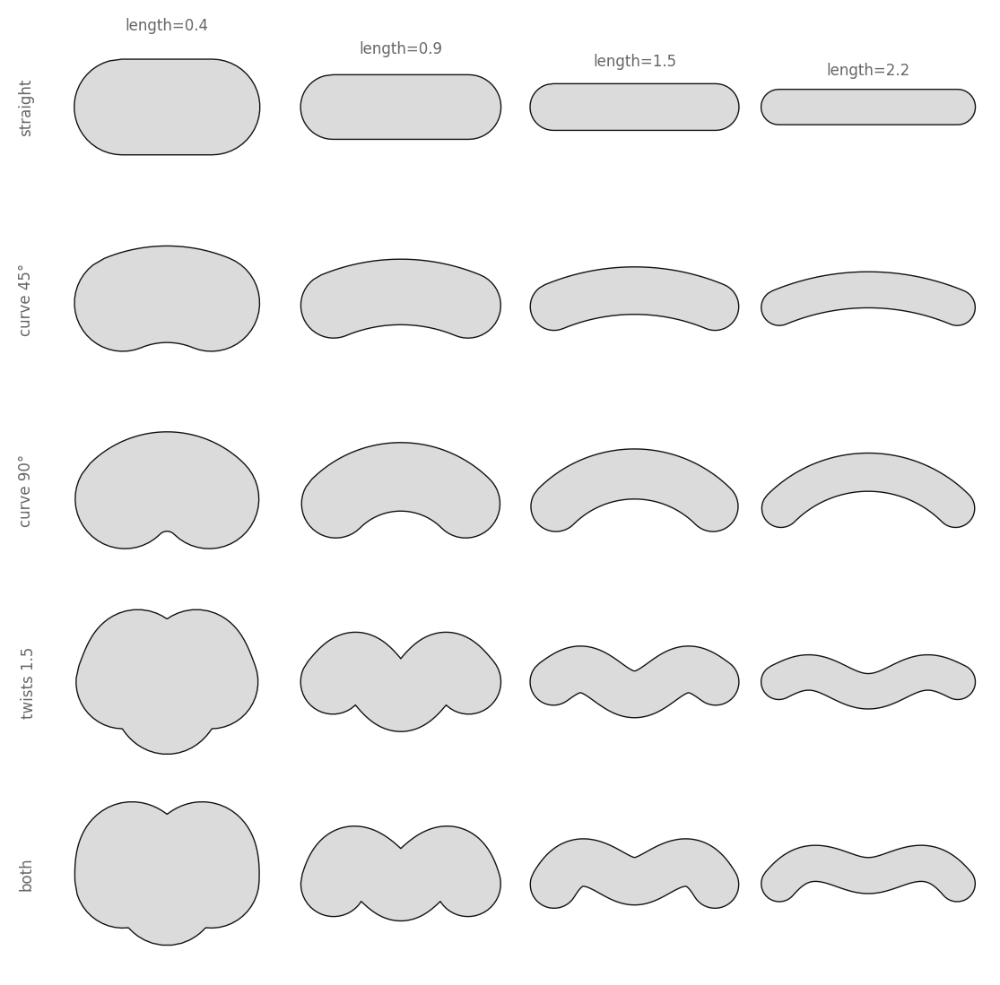
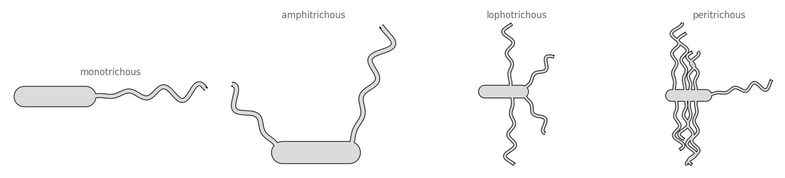
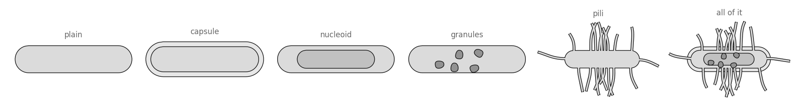
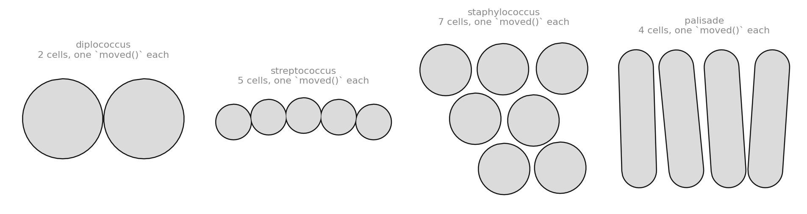

All examples Microbes
Bacteria
A capsule body and what is hung off it. The named forms — coccus, bacillus, vibrio, spirillum — are settings of three knobs, so the space between them is drawable too.
micro.Bacteriumpaths.tube

The third domain on biodraw.core, and the first whose body is a tube rather than a ring. A Blob is a closed outline with things inside it; a bacillus is a centreline with a width, which is structurally the same object a dendrite is.
The blueprint

1 · The axis. Three terms on one centreline: a straight run, bent into a circular arc by curve_deg, then waved by twists. They compose rather than switch, which is why a curved rod with a twist in it is as reachable as either on its own. The arc keeps the same arclength, so bending a cell changes its shape and not how much cell there is.
2 · Both ends, or it is not a cell. Every tube in this library until now grew out of something, so its near end was a flat chord waiting to be buried in a parent. A free-floating cell has no parent, and the flat end reads as a specimen that was sectioned. paths.tube(cap_base=True) is the one thing this domain needed from the core — a semicircle, in the primitive that already drew the other one.
3 · flagella_arc_deg. Where an appendage leaves, as a sweep of the outline with 0° at one pole and 180° at the other. It is resolved against the outline as drawn, so a cap, a taper or a bend is accounted for rather than idealised away. This is Blob's protrusion vocabulary reused exactly: a reader who has met one shape already knows this one.
4 · Anchors. Two poles, eight round the wall, one per appendage tip. Same anchors as any other shape, so connectors and labels work here for free.
Six forms a reader can name

These are settings, not classes. The textbook names each describe one axis — how long the body is, how far it bends, how many times it twists — so given those three as numbers every named form is a value and the ones in between are drawable. An enum would have made the six names the only reachable shapes and turned the space between them into dead code.
import biodraw as bd
coccus = bd.micro.Bacterium(length=0.0, width=0.62) # a capsule of no length is a circle
bacillus = bd.micro.Bacterium(length=1.40)
vibrio = bd.micro.Bacterium(length=1.40, curve_deg=72) # the comma
spirillum = bd.micro.Bacterium(
length=2.20,
twists=1.8, # helical turns along the body
twist_amp=0.62, # how far the wave swings, x width
)The space between them

Length across; what the axis does, down. Nothing here is a mode — the bottom row is a cell that is bent and twisted, which no list of named forms has a name for.
Flagella

The four textbook arrangements are two numbers each: how many, and over how much of the outline. The flagella themselves are Branch tubes — the waver that makes a dendrite look hand-drawn, turned up until it is the whole shape.
mono = bd.micro.Bacterium(flagella=1, flagella_arc_deg=0) # one, at one pole
amphi = bd.micro.Bacterium(flagella=2, flagella_arc_deg=360) # one at each pole
lopho = bd.micro.Bacterium(
flagella=4,
flagella_arc_deg=74, # a narrow sweep...
flagella_start_deg=-37, # ...centred on one pole: a tuft
)
peri = bd.micro.Bacterium(flagella=9, flagella_arc_deg=360) # all roundflagellum_waves is a cycle count, and it is turned into a wavelength before it reaches Branch. That matters because jitter varies the lengths: a shared count makes the short ones wiggle faster than the long ones. This library has now had to fix that in three separate places, which is why it is check 1 of review-a-drawing.
Envelope and contents

The capsule is the first thing in this library that has to go under a body rather than over it — and it still needs its own Layer, because unioned with the cell it would simply become a fatter cell.
There is a nucleoid and deliberately no nucleus. Drawing a bacterium with a nuclear envelope is the single loudest error this shape could make, so the nucleoid follows the body's own centreline as a shrunken tube: both what it looks like, and impossible to mistake for the other thing.
cell = bd.micro.Bacterium(
length=1.40,
capsule=0.20, # slime layer thickness, x width — drawn under the wall
nucleoid=0.66, # x the body half-width, following its own axis
granules=5, # inclusions, scattered by core.scatter
pili=20, # fimbriae: many more and much shorter than flagella
)Arrangements are composition

A diplococcus is two cocci. There is deliberately no arrangement= keyword: placing cells relative to each other is moved(), which every shape here already has, and a colony keyword would be one person's idea of a colony living inside a general drawing library. Same argument that removed the contact-placement engine.
r = 0.27
cells = [
bd.micro.Bacterium(length=0.0, width=0.54).moved(at=(0.0, 0.0)),
bd.micro.Bacterium(length=0.0, width=0.54).moved(at=(2.05 * r, 0.0)),
]
for cell in cells:
cell.draw(ax=ax, wall_lw=0.9)Spacing is a clearance, not a look. Two cocci of radius r draw through each other below 2r, and the seeded jitter can take another 0.16 r out of any gap — the first version of that cluster had eleven overlapping pairs out of twenty-one, from slots written as if they were in diameters.
Anchors
| kind | where | count on the cell above |
|---|---|---|
pole | the two ends of the axis, each pointing away from the body | 2 |
wall | eight points round the outline, swept from the +axis pole | 8 |
flagellum | the free end of each flagellum | 7 |
pilus | the free end of each pilus | 16 |
head = cell.anchor("pole", end="far") # one end of the axis
side = cell.anchor("wall", deg=90.0) # the flank
tip = cell.anchor("flagellum", rank=0) # the first flagellum's free endwall_at(deg) is public, and exact on a rod. On a strongly twisted spirillum it is not: a ray from the centre can cross the outline more than once, and it takes the best-aligned vertex. Flagella on a spirillum are polar in practice, so the ambiguous region is not where they are asked for — but it is a real limit, and it is a method you can check rather than arithmetic buried in a constructor.
Every figure above is output, not a stored asset — the full script that draws them.